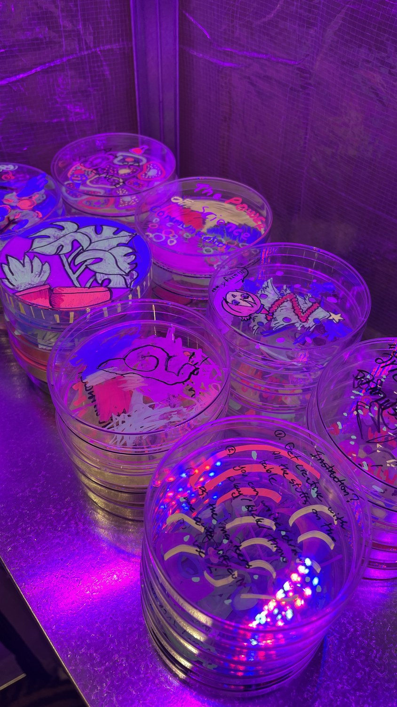
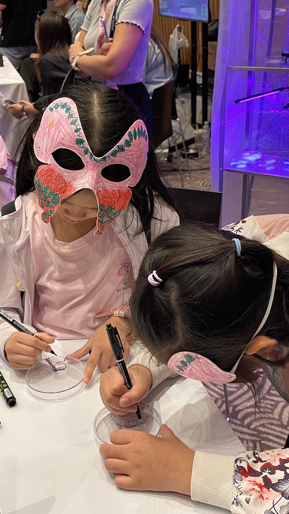
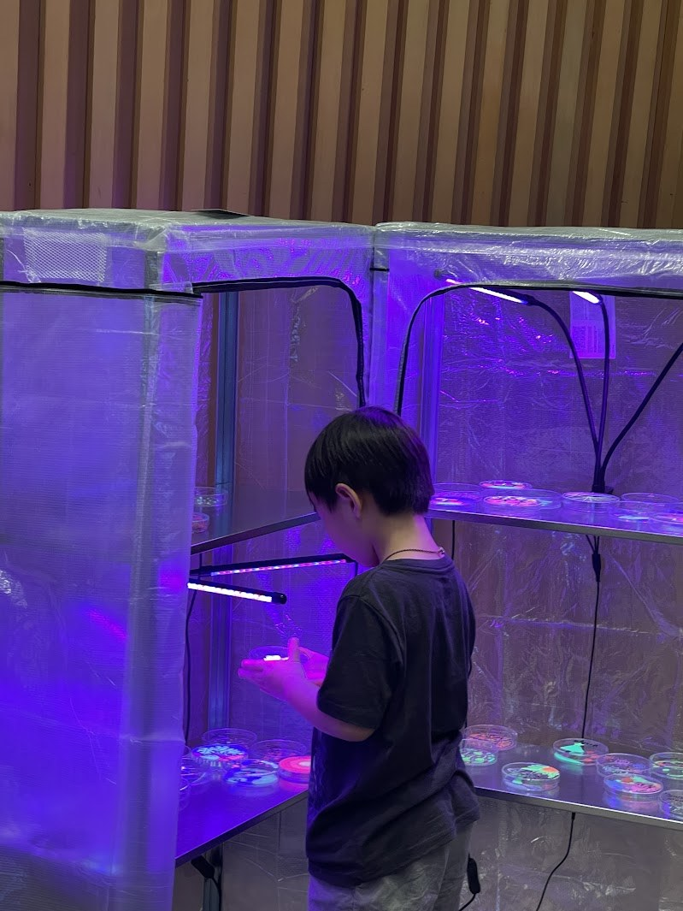

ประกอบไปด้วย 2 งาน ที่ให้คนได้มามีส่วนร่วมในการเล่น
“การศึกษาคือการเปลี่ยนสถานะและการเปลี่ยนผ่าน”
เล่าเรื่องการศึกษา STEAM ผ่านวัฒนธรรมหน้ากาก ซึ่งเกี่ยวกับการปรับเปลี่ยนร่างกาย จิตใจ และสถานะในความเชื่อแบบก่อนโบราณ
Output: Exhibition+open-workshop ที่คนจะได้มา custom หน้ากากกระดาษ ผ่านการตัดแปะ ระบายสี ภาพที่เกี่ยวกับวิทยาศาสตร์/คณิตศาสตร์/เทคโนโลยี
และ
“Citizen Science ขับเคลื่อนด้วยกลุ่มชุมชนจากทั่วโลกผ่าน Opensource”
เล่าเรื่อง Opensource culture ผ่านไอเดีย “ตู้ปันสุข” ในช่วงโควิดที่คนสามารถมาเปิดใส่ของ และรับของจากผู้อื่น สร้างเป็นกลไกโดยผู้คนที่แชร์ความรู้กันระดับโลก
Output: Installation “ตู้ปันความรู้” แล้วให้คนมาทำ simple art object ที่คนอื่นสามารถหยิบไปเล่นต่อได้


